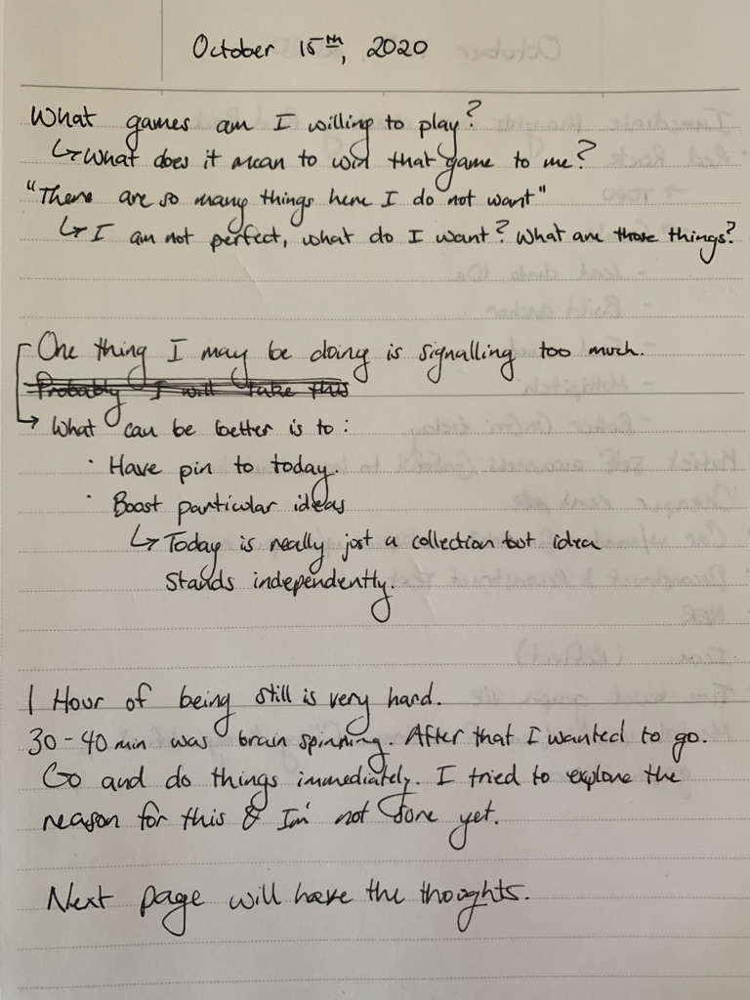
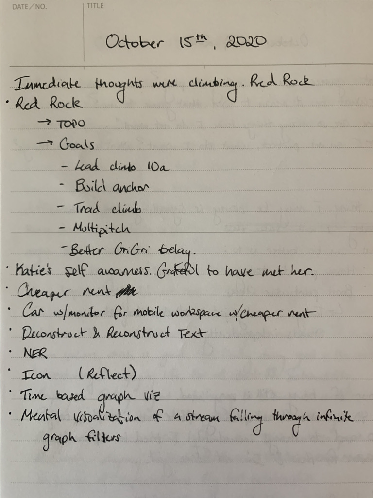

Apparently Naval is like a big thing or something, but I don’t know much about him at all. Whatever. Regardless had a lot of interesting things to say and appreciated this conversation between him and Tim.
I bookmarked 7 locations and ended up favoriting this podcast. I might take some more time later to dissect and reflect on it. For now let me just cover what I did bookmark.
31:44
Knowing when to “start from scratch”. When it’s time to climb down the mountain. What you know now is actually an impediment to your full potential.
Why I bookmarked this is probably for a few reasons, but mainly that this is a ‘sunk cost’ (actually discussed with Austin yesterday too). Everything you know now is great, but learning and change in the only way to keep up and be ahead of the curve.
42:14
Naval is talking about his own anxiety. That it can be a motivating factor. When you feel anxious the best thing to do is take care of it. This helps to calm it, until the next bout comes in and then you take care of that.
As someone who gets anxious I just loved this point of view and have found it very accurate with my own life. It seems to resonate very heavily with me. This is one of the reasons I must work out. I must climb. I must do something. If I am not, my brain starts to fly in 100000 different directions. I noticed my greatest anxiety is doing NOTHING in the meditation.
54:21
You have a crazy roommate in your head. In the real world, eventually you would tell this crazy roommate to shut up. But you are less likely to do this to yourself. Basically something to be aware of.
1:14:26
Both Republican and Democrats realized during the pandemic that they can just print money. That this has relatively little impact to the inflation within the US. That’s because USD is the reserve currency of the world. All countries use it to trade for all kinds of goods. Since 70% lies outside of American hands, it burdens the rest of the world to print money more than it does America.
This is fascinating if you ask me. Maybe a little fear-mongery, but I don’t really think so. I think it is clear the USD will not remain the reserve currency of the world, and I do think cryptocurrency has a shot of being the reserve currency eventually. It is much more useful in a lot of respects and is decentralized. I mean with Bitcoin there are obvious issues if governments try to break up the chain (51% attack it). But anyway, very interesting point here and didn’t know the extent that other nations held USD.
1:29:53
“Digital Scarcity” and it in relation to Bitcoin itself. However there is also the idea of NFT (which discussing with Kristen and Dave), so see more about this below. JK
Anyhow it’s an interesting idea and something I’d expect to become more prevalent
1:42:16
Society itself is basically a bunch of games. You shouldn’t make yourself miserable by trying to win the game. You need to find the balance for yourself what is winning to you. Every game can be one, but it’s all in relation to you. (this wasn’t explicitly said but this is how I interpreted)
Not wanting something is as good as having it
In the market Socrates saying - “How many things are these which I do not want”
Would love to get to this point in life. Still so many stupid things I want (hello iphone)
1:50:25
Examine your own thoughts from first principles. Doing activities that are intrinsically for you.
Basically the note for myself was that climbing is this for me. It literally has no purpose. You look at it and you’re just climbing a random rock. Literally. There’s almost nothing more to it than hey look I climbed this rock. Lol ok. Yet this act itself is pure fun. Pure fear. Just so much embodied.
There’s really a lot more, but my brain is starting to go (well it’s really running fast, but not in this direction)
1 HR Meditation
Basically this is really fucking hard. I couldn’t stop fidgeting after a while. It was that my brain was clear, but I wanted to start getting going on things. Not doing things was making me anxious to do. I think this is part of the reason I don’t like to get high any more is because I like to do things. When I am not doing things my brain starts to go insane. However this is something I want to tap into and explore more, try to find comfort in the uncomfortable.
Here’s what I wrote:
 
Morgan Lunch
We had lots to catch up on :) Been a crazy week. Also The Taco Stand was delicious as always. Al Pastor baby. Just get that.
Kristen and Dave Convo
OH FUCK SO MUCH FUN.
I have a lot of notes, but it is quite difficult to capture some of the things, so I might summarize a lot. Fortunately this time I had a pen, however I did lose it.
Catching up about the trip, which ended up spinning out most discussion. Awesome. This is perfect
Food
Access to farmer’s markets, and the radical difference between grocery stores and a farmer’s market. How different it is to pluck a chicken. When grocery stores first came about they allowed for a huge time savings. Today we have entirely forgotten even what food is to a large degree.
Can’t forget the heirloom tomatoes!
How do we balance 10 Billion people while providing food to all, and have it be sourced well and responsibly. Giving some more insight into where it came from
Supply chains are crazy
So from all this, I mean is it possible to add a data layer on top of food?
Example would be the “So-Cal Honey” I have from Costco. Where in socal did this come from? Can I visit the farm? Is there a QR code or something?
Speculative Fiction (Futures)
Holy crap. Um
Basically writing what a future could be? “Pitching it”
Not sure how to write, my brain is like YES
“I just reinvented Costco, here’s how”
Can have a bunch of different aspects. From story, to actual tech and potential implementations.
Playing around with ideas, but not necessarily making them
Spark interest
Early web
It was not just enough to show up. You had to put in WORK. It was not easy and not understood. We only can understand now after years and years of work.
Basically how to have a protocol sharing between people who are opting in. So much more here too, but words.
Identity
I feel we are desperately missing an identity system on the web. How can I communicate with you and we both know it’s me. It is not a pseudonym, but actually me. CJ. This is me. Hi. I can give you access to information or not. You can’t see inside my brain when we talk, but I can choose to divulge a lot. How can we do this on the internet??!??!?!!?!?
SolarPunk <-> Upspin
Basically that this would be taking control of life. In many different ways. Being sustainable. Able to have tech that acts in a similar philosophy.
Having a group in one place. Being aware of everything. Political tensions etc. This can be played out in writing as well as real experiments in the physical world. Um yes. Basically this would be sick.
“Speculative Rounds” hahahahahaahaha
Playing with different philosophies
Art + Thinktank + …*
Want to present alternate worlds.
HAVE FUN WITH IT
Speculative failures? Real ones?
the red sash everyone wearing was too culty
Diversity is so much more than skin color
There in infinite ways of diversity here. Each and every one of us is diverse. What problems we solve. Our backgrounds. What makes sense to me may not to you, but it can be reframed to. There is common understanding to be found everywhere even in diversity.
What is 4E CogSci?
I don’t know I need to look up more
peasants saying to the kings “your rules suck”
lost the context in my brain but i liked this
One of the major problems we are facing is consumerism on the individual side. There is a lot that you can do with not a lot of money, especially when there are a lot of brains working together. We have this idea that we can just spend money and make a problem go away. The issue is so many people are paying to solve the same problem. Is it possible to collapse that being spent once? There would be a lot more benefit for everyone this way. Or how can things be shared more effectively?
Underground network of cooler AirBNB must exist, but it’s not publicly shared because that would ruin it.
The Stoa
Ummmm I know nothing about this. But it looks to be a philosophy collective of some kind. Dave mentioned Philosophy, Religion, Cognitive Science, and Spirituality. Perhaps adjacent to the “intellectual dark web”
Check out Keith Johnstone
Improv guy. Very similar to this conversation itself.
Trying to make your partner look better
Enjoying Failure
Trust Based Play
Potentially discuss “Ch: 9 n-Dimensional Spaces” in Hamming’s book?
Continuous publishing
Yeah I am too lazy to commit my work manually. So now on save:
generate html from md
generate index from all html
copy today’s note to https://daily.cjpais.com/today.html
git add *
git commit -m random_emoji()
git push origin master
ping web-server to update
This means as soon as I start writing in the morning updates will start to be published. Great. Now I don’t have to think at all.
Part of this is in response to Jon’s latest patch notes with a “tighter publishing feedback loop”. This system takes some effort out. While it’s not per character, I do get live previews since I edit in VSCode.
Podcast Controls
Going forward there MUST be controls to seek the podcast (or have clips of it) where I bookmarked. For now this is okay, but I am not happy, and the site is too static to handle this currently. This will be another reason to move to Reflect
If writing about this podcast to some level was not motivation to build Reflect I don’t know what is.
Automatic linking of headers
Yeah I need to make sure the markdown exporting actually exports headers and I have a clean way to ref them while I’m writing. If not I am going to go crazy.
While I worked on 5G it is the technology that is most in favor of the existing tech corporations. I mean why would the companies push this hard. Did 5G need to be mentioned 40+ odd times? NO ONE WILL FUCKING NOTICE RIGHT NOW.
It’s a nice to have but not essential in the slightest.